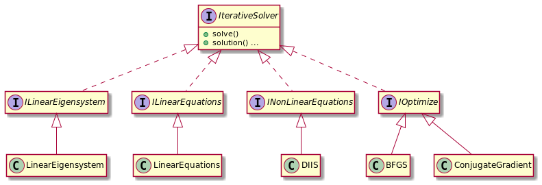
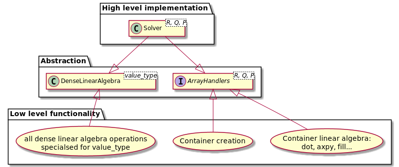
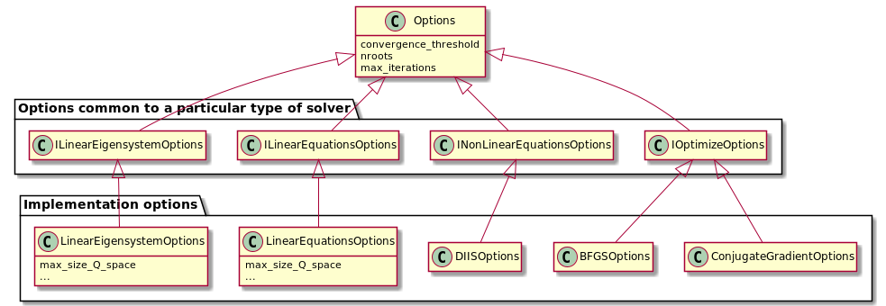
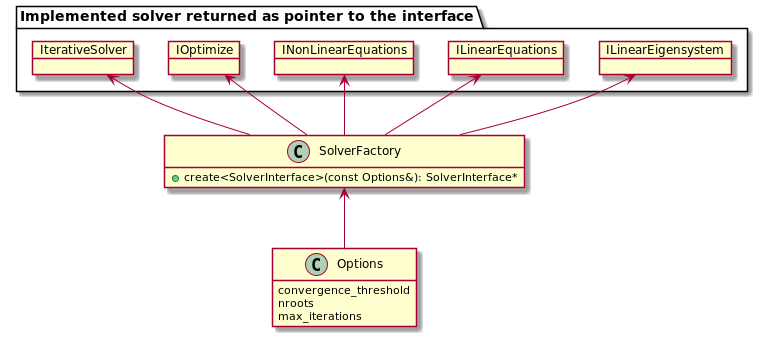

|
iterative-solver
.
|


|
|
iterative-solver
.
|
|
There are 4 types of solvers. They share a very similar functionality and their common interface is expressed in IterativeSolver base class.
Each type of solver can have multiple implementations.

Solvers are templated on container type so that the user can choose optimal container for their problem. This requires two sets of dependency inversion.
Firstly, dense linear algebra operations are wrapped up in DenseLinearAlgebra class, which depends on the type of container elements. This can be time consuming to compile so it is specialised for double and std::complex.
Secondly, ArrayHandlers defines the interface for operation on containers such as copying, linear algebra, lazy evaluation etc. ArrayHandlers is a collection of ArrayHandler abstract classes. There are implementations of ArrayHandler for common container types, but for more specialised cases the user must provide their own.

There are setters and getters for setting the options, but they require complete type of the object to be known. This might not be possible if the user is working with solver through the interface. Working through the interface can be necessary to reduce compilation time and minimize header bloat.
Instead options can be set in the Options class and then passed to IterativeSolver::set_options() which will call setters internally. Similarly calling IterativeSolver::get_options() returns a pointer to the Options class and the user can query their values.
Options classes are organised in a hierarchy that mirrors inheritance structure of iterative solvers (see above). At the lowest level are options for each implementation of a solver and they contain all of the available options that can be set, including for interface classes.

SolverFactory allows dynamic creation of a solver. It takes an implementation options object by reference and deduces the corresponding solver with dynamic casts. This is the main reason why the options hierarchy mirrors that of solvers.

In parallel computing it is often necessary to distribute an array over multiple processes. Each process stores a small section of the array without overlapping. There are multiple implementations of this approach including Global Arrays, MPI3 windows, parallel HDF5 and others. We provide a simple interface to different implementations of distributed arrays to allow cross-compatibility and simplify their usage.
There are three aspects to consider:
The distribution can be defined using molpro::linalg::array::util::Distribution and the abstract class molpro::linalg::array::DistrArray defines common functionality such as checking that two distributed arrays are compatible and accessing the local buffer.
The linear algebra operations only require local sections and can be supported by all distributed arrays. However, some implementations can use more efficient algorithms (e.g. buffering local section in chunks when loading from disk), so the linear algebra operations have to be virtual functions in the base class.
Not all implementation can or need to support RMA operations, however most will. We decided to make RMA operations part of the abstract base class, even though they might not always be implemented thus breaking the Liskov substitution principle.